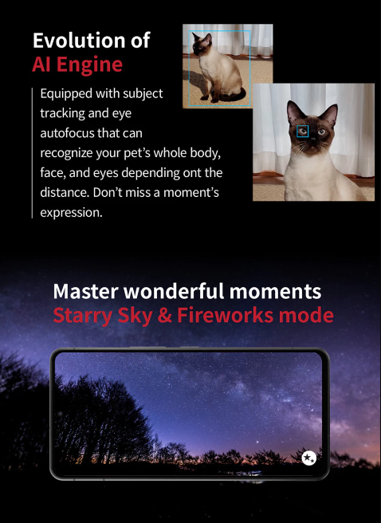
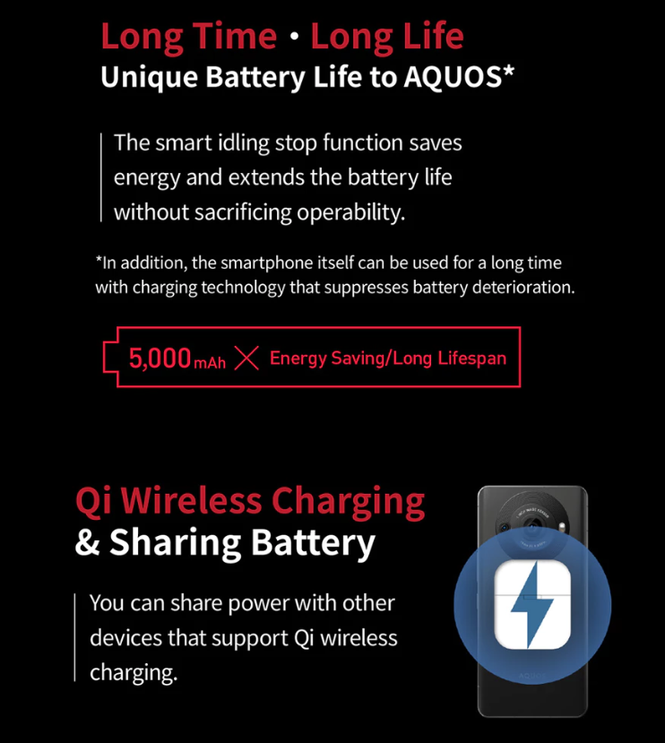

Giảm 500.000đ khi thanh toán qua QR-Code Zalo Pay (code: ZLPSD - SL có hạn)
Giảm 20% gói SC+ khi mua kèm
Hỗ trợ trả góp 0% qua thẻ tín dụng
Trợ giá thu cũ đổi mới
Lưu ý: Không cộng gộp CTKM giảm giá qua cổng thanh toán (*) Liên hệ nhân viên tư vấn để biết thêm chi tiết
Thông tin sản phẩm
Hiệu suất siêu vượt trội với Snapdragon 8 Gen 2 cùng với thiết kế tản nhiệt bởi Sharp
Sharp AQUOS R8 Pro gây ấn tượng mạnh mẽ nhờ vào con chip Snapdragon 8 Gen 2 và bộ nhớ RAM 12GB. Tất cả mọi tác vụ từ lướt web, chơi game đến đa nhiệm đều đảm bảo đáp ứng một cách mượt mà. Nhưng vấn đề quá nhiệt trên CPU Snapdragon 8 Gen 2 vẫn là một vấn đề khó để giải quyết.
Snapdragon 8 Gen 2 bên trong Sharp AQUOS R8 Pro
Nắm bắt được vấn đề quá nhiệt trên CPU, Sharp đã cho ra đời một thiết kế tản nhiệt hoàn toàn mới lạ trên thị trường, đó là thiết kế khe thông gió qua cụm camera, điều này giúp cho việc tăng cường airflow bên trong thiết bị và từ đó luồng không khí nóng luôn luôn dễ dàng thoát ra bên ngoài chứ không bị giữ lại bên trong thiết bị, nhiệt độ từ đó giảm đi rất đáng kể.
*Hình ảnh là từ một trò chơi 3D tải cao được chơi trong hơn 21 phút trong môi trường phát triển đã loại bỏ các hạn chế về nhiệt độ.
Thiết kế cao cấp với cảm biến 1 inch phía sau sang trọng
Sharp AQUOS R8 Pro có thiết kế màn hình kiểu dáng “đục lỗ”, tích hợp thêm cảm biến vân tay siêu âm 3D bên dưới và được bảo vệ bởi lớp kính Corning Gorilla Glass Victus. Đặc biệt, cạnh viền của Sharp AQUOS R8 Pro được hoàn thiện dạng hạt thô và nhám mang lại cảm giác cầm nắm y hệt như trên những chiếc máy ảnh cơ. Nhìn chung, thiết bị rất chú trọng đến chất lượng màn hình, màu sắc hiển thị và độ sáng của màn hình. Và thiết kế viền màn hình giờ đây đã mỏng đi rất nhiều so với phiên bản tiền nhiệm AQUOS R7 trước đó, AQUOS R8 Pro đã chứng tỏ xứng tầm là một sản phẩm cao cấp.
Thiết kế bên ngoài của Sharp AQUOS R8 Pro
Mặt lưng điện thoại thiết kế nhám với màu đen, giúp hạn chế dấu vân tay và mô hôi bám lại. Cụm camera phía sau nổi bật với cảm biến chính lớn ở giữa và ống kính phụ nhỏ bên cạnh, có thể là cảm biến màu. Thiết kế này mang đến cảm giác giống như ống kính của một chiếc máy ảnh. Về mặt tổng thể, mặt lưng điện thoại trông rất hài hòa, không quá hầm hố như nhiều smartphone hiện nay chỉ có cảm biến 1 inch. Bởi vì nó chỉ có một camera chính đảm nhận vai trò chụp ảnh.
Hệ thống camera đẳng cấp, hàng đầu thị trường
Sharp AQUOS R8 Pro được trang bị cảm biến hình ảnh 1 inch với độ phân giải 47.2MP cùng ống kính SUMMICRON do Leica giám sát và tinh chỉnh, mang đến khả năng chụp ảnh chuyên nghiệp với màu sắc chân thực và chi tiết rõ nét. Nhờ khẩu độ f/1,9 và dải tiêu cự từ 19mm đến 35mm, AQUOS R8 có thể chụp đa dạng các bức ảnh từ góc siêu rộng đến tele vẫn đảm bảo chất lượng cao.
Cảm biến 1 inch của AQUOS R8 Pro
Sự cải tiến đáng kể nằm ở độ phân giải tăng lên 47.2MP, cho phép thiết bị chụp ảnh có độ phân giải cao, đảm bảo từng chi tiết nhỏ được giữ lại một cách chân thực. Tính năng QBc (pixel quad-blend) hỗ trợ zoom mà không làm giảm nhiều chất lượng hình ảnh, giúp bức ảnh phóng to vẫn giữ được độ sắc nét.
Tốc độ lấy nét của điện thoại cũng thật sự ấn tượng nhờ vào công nghệ Octa PD AF, lấy nét nhanh gấp đôi so với AQUOS R7. Khi sử dụng, mình cảm nhận được sự khác biệt rõ ràng khi chụp ảnh hành động hoặc các vật thể di chuyển nhanh. Hơn nữa, sự hỗ trợ từ AI giúp camera có thể tự động nhận diện khuôn mặt, mắt người chính xác và nhanh chóng với tốc độ xử lý nhanh hơn 1,5 lần.

Sharp AQUOS R8 Pro năm nay được thiết kế riêng một bộ phụ kiện camera cung cấp bởi MARUMI, KANI OPTIC và Kenko chỉ dành riêng cho sản phẩm này. Bộ phụ kiện này hứa hẹn sẽ nâng tầm sức sáng tạo của bạn cho từng bức ảnh.
Các bộ lọc ống kính dành cho AQUOS R8 Pro
Màn hình Pro IGZO OLED 6,6 inch sắc nét không chỉ đẹp mà còn dễ nhìn
Sharp AQUOS R8 Pro là mẫu điện thoại được đánh giá tương đối cao về chất lượng hiển thị. Sử dụng tấm nền OLED tích hợp công nghệ Pro IGZO mới nhất của Sharp với kích thước 6,6 inch và độ phân giải WUXGA+, cung cấp không gian hiển thị rộng rãi và sắc nét. Không chỉ có vậy, Sharp đã sử dụng màn hình vật liệu mới cho AQUOS R8 Pro giúp giảm ánh sáng xanh khoảng 50%, giúp giảm mỏi mắt hơn khi sử dụng cho người dùng.
Màn hình Pro IGZO OLED 6,6 inch
Màn hình này còn có thể hiển thị lên đến 1 tỷ màu sắc, khiến cho các nội dung mình xem trở nên sống động và chân thực, từ bộ phim đến những bức ảnh. Độ sáng tối đa lên đến 2.000 nits cũng là một điểm ấn tượng giúp màn hình luôn sáng rõ ngay cả khi sử dụng ngoài trời.
Ngoài ra, Sharp AQUOS R8 Pro còn hỗ trợ công nghệ Dolby Vision, khiến trải nghiệm xem phim và video trên màn trở nên nổi bật với dải màu phong phú và độ tương phản cao. Tần số quét linh hoạt từ 1Hz đến 240Hz là một tính năng không thể bỏ qua. Khi cần tiết kiệm pin, màn hình sẽ giảm tần số quét xuống mức tối thiểu, và khi chơi game hoặc cuộn trang, nó có thể tăng lên đến 240Hz, mang đến trải nghiệm mượt mà không giật lag.
So sánh giữa màn hình tần số quét 60hz và 240hz
Điện thoại còn trang bị cảm biến vân tay siêu âm 3D ngay dưới màn hình, giúp mở khóa chính xác và nhanh chóng ngay cả khi tay hơi ẩm.
Đặc biệt Sharp vẫn còn giữa lại được cổng tai nghe 3.5mm, rất tiện lợi cho việc nghe nhạc. Khả năng kết nối 5G của AQUOS R8 Pro cũng rất ấn tượng với tốc độ tải xuống lên đến 4.9 Gbps, đảm bảo trải nghiệm kết nối mạng nhanh chóng và mượt mà khi stream video hoặc tải file lớn, phục vụ tốt nhu cầu giải trí và làm việc.
Viên pin tiêu chuẩn 5000 mAh và nhiều tiện ích tiện lợi khác
Sharp AQUOS R8 Pro trang bị viên pin 5000 mAh, mang đến thời lượng sử dụng ấn tượng. Với khả năng hỗ trợ sạc không dây (Qi) tiện lợi giúp mình dễ dàng nạp đầy năng lượng cho thiết bị mà không lo về dây cáp. Máy còn sở hữu chuẩn kháng nước IPX5 và IPX8 cùng khả năng kháng bụi IP6X, đảm bảo cho AQUOS R8 Pro sử dụng khá ổn trong những điều kiện thời tiết khắc nghiệt hoặc khi đi du lịch.

Viên pin tiêu chuẩn 5000 mAh cho Sharp AQUOS R8 Pro
Điện thoại được cài sẵn hệ điều hành Android 13 mang đến trải nghiệm giao diện mượt mà với nhiều tính năng mới mẻ. Việc tích hợp NFC và Bluetooth 5.3 cũng là một điểm cộng lớn, giúp cho việc kết nối với các thiết bị khác dễ dàng và thực hiện thanh toán nhanh chóng. Đặc biệt AQUOS R8 Pro sẽ được hỗ trợ hệ điều hành hơn 4 năm, vì thế nên có thể yên tâm sử dụng thiết bị trong thời gian dài.
Thông số kỹ thuật
Kích thước màn hình
6.6 inch
Công nghệ màn hình
Pro IGZO OLED
Độ phân giải màn hình
1260x2730 pixels
Tính năng màn hình
1B colors, 240Hz, Dolby Vision, HDR10, 2000 nits (peak), Rich Color Technology Mobile, Blue Light Reduction, Relax View
Camera sau
Camera chính: 47.2 MP, f/1.9, 19mm (ultrawide), 1.0"-type, dual pixel PDAF, 1-inch sensor designed by Leica Camera AG